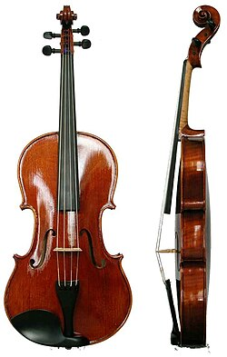
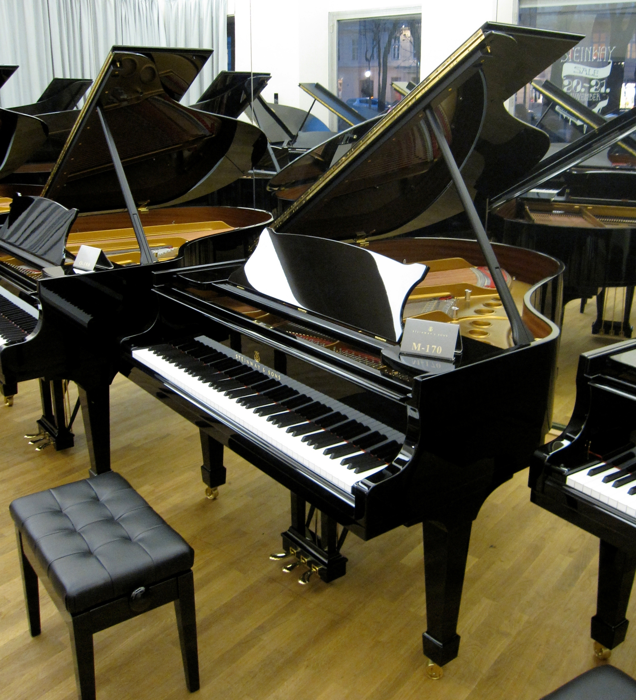

Mano instrumentinis pasaulis
Viskas apie instrumentus ir kas juos paverčia nuostabiais

Altas
Styginis instrumentas. Tai gilus, šiltas ir aksominis žemas moteriškas (arba labai aukštas vyriškas) balsas, kuris chore sujungia kitus balsus į vientisą harmoniją, suteikdamas muzikai sodrumo ir ypatingo emocinio svorio, o klasikinėje muzikoje jam dažnai patikimi patys paslaptingiausi ir dramatiškiausi personažai.

Fortepijonas
Karališkas klavišinis muzikos instrumentas, džiuginantis savo nepaprastu diapazonu ir skambesio gelme, kurio plaktukėliai muša į įtemptas stygas, leidžiantis atlikėjui vienu metu valdyti ir subtiliausią lyrinį šnabždesį, ir griausmingą orkestrinę jėgą, todėl jis laikomas visos Vakarų muzikos centro ašimi.